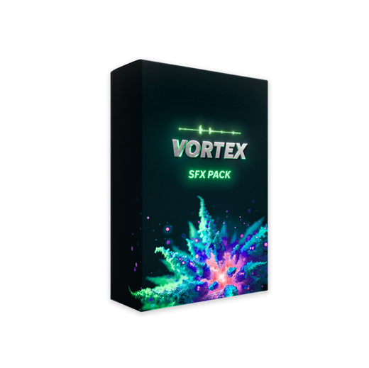
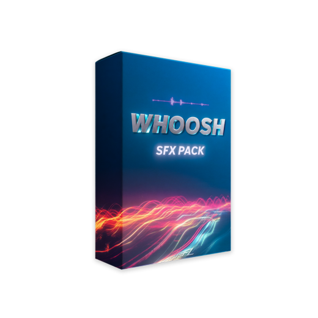

Nouveau
App · Mac + Windows3,99 €
GrabLAB
Colle un lien YouTube, TikTok ou Instagram — récupère le MP4 jusqu'en 4K ou le MP3, sans filigrane.
Découvrir l'appPacks After Effects, banques SFX et la formation MetaVision — les mêmes assets que sur nos plus gros projets, prêts à glisser-déposer dans ta timeline.
Presets, templates et SFX pensés pour After Effects — testés en prod avant d'arriver ici.
Colle un lien YouTube, TikTok ou Instagram — récupère le MP4 jusqu'en 4K ou le MP3, sans filigrane.
Découvrir l'app11 animations de texte, 12 styles, 881 emojis animés et 10 outils — dans After Effects, avec les titres animés aussi dans Premiere Pro.
Découvrir le pluginLa formation VFX complète — d'After Effects niveau zéro jusqu'à tes premiers clients.
Voir la formationLe pack tout-en-un pour un rendu clean et moderne : icônes PNG, templates After Effects, éléments UI.
Voir le packParticules pour After Effects : 4 presets de transitions + 4 overlays GhostFX.
Voir le packPlus de 10 track mattes modifiables pour tes transitions — le point d'entrée idéal.
Télécharger
Bruitages percutants — énergie, impacts, transitions — et ambiances immersives haute qualité.
Voir le pack
Le pack parfait pour dynamiser tes edits : cinématique, digital, rapide, ambient et plus.
Voir le packClique sur un asset pour le télécharger — gratuit, direct, sans compte.
Rejoins la ligue des professionnels qui font confiance à nos produits pour leurs projets les plus significatifs. Ta créativité mérite le meilleur.
Une question sur un preset, un template qui coince ? La communauté et Femz répondent tous les jours.
Des clips de musique certifiés or et platine aux campagnes des plus grandes marques, chaque projet m'a appris la même chose : une image ne vaut que par l'histoire qu'elle raconte.
Un plan qui arrête le pouce, une transition qu'on rejoue, un son qu'on ressent avant même de le comprendre. Le détail n'est pas de la décoration — c'est ce qui fait qu'une vidéo reste en tête.
Les presets, packs SFX et templates qui tournent sur mes plus gros projets, je les mets entre tes mains — pour que tu passes moins de temps à galérer, et plus de temps à créer ce qui te ressemble.